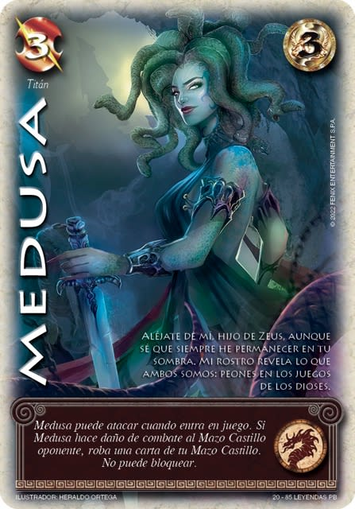

Mazo Titán

Características de un mazo Titán
Un mazo Titán en Mitos y Leyendas se refiere a un tipo de mazo centrado en los Titanes de la mitología griega, que eran las poderosas deidades predecesoras de los dioses olímpicos. Estos titanes son conocidos por su inmenso poder y resistencia, lo que se refleja en las cartas asociadas a ellos dentro del juego.
-
Enfoque en cartas de alto costo y poder: Los titanes, siendo entidades poderosas, suelen tener un costo alto de juego, pero sus efectos son muy poderosos, capaces de alterar el curso del juego de manera drástica.
-
Resistencia y durabilidad: Las cartas de titanes suelen tener una gran cantidad de fuerza y habilidades defensivas, permitiendo que estos personajes permanezcan más tiempo en juego y puedan absorber grandes cantidades de daño.
-
Sinergia entre titanes: Como en los mazos temáticos, las cartas de titanes suelen interactuar entre sí para potenciar sus habilidades, otorgando bonificaciones adicionales o activando efectos especiales cuando hay más de un titán en el campo de batalla.
-
Destrucción y control del juego: Los titanes suelen tener habilidades que pueden destruir cartas del oponente, reducir sus recursos o evitar que puedan ejecutar su estrategia de forma eficiente, lo que hace que un mazo titán sea excelente para tomar control del juego a largo plazo.
-
Juegos más lentos pero devastadores: Los mazos titán generalmente funcionan mejor en partidas más largas, donde pueden sobrevivir los primeros turnos y luego desplegar su enorme poder en el campo de batalla. Aunque los mazos titán pueden tardar en tomar control del juego, cuando lo hacen, es difícil para el oponente contrarrestarlos.
Un mazo titán puede ser ideal para jugadores que prefieren una estrategia que requiera construir una sólida defensa y luego lanzar un contraataque masivo, utilizando criaturas de gran poder y habilidades que impactan de forma decisiva
Regresar a inicio